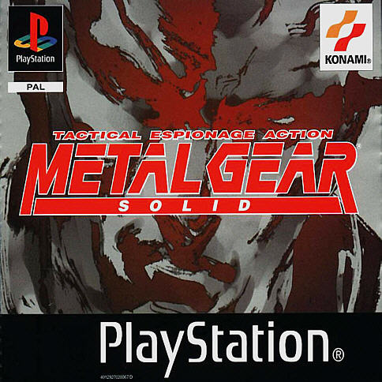

Metal Gear Solid (comúnmente abreviado MGS) es un videojuego de acción-aventura y sigilo de 1998 desarrollado por Konami Computer Entertainment Japan y publicado por Konami para la consola PlayStation. Fue lanzado el 3 de septiembre de 1998 en Japón, el 21 de octubre de 1998 en Norteamérica y el 24 de junio de 1999 en Europa. Inicialmente se había previsto su lanzamiento para 1994 en la consola 3DO Interactive Multiplayer, con el título «Metal Gear 3». Sin embargo, debido a la disminución del apoyo para la plataforma, el desarrollo del juego fue cambiado a la PlayStation. Metal Gear Solid es el tercer lanzamiento de la franquicia Metal Gear y se convirtió en el primero de la serie en hacer uso de gráficos 3D, una de las razones por la que se le añadió el término «Solid» (en español: «Sólido») al título. Su antecesor es Metal Gear 2: Solid Snake de 1990, y su secuela, Metal Gear Solid 2: Sons of Liberty, se estrenó en 2001.Esta nueva entrega ofreció escenas cinemáticas utilizando el motor del juego, así como la actuación en voz en numerosas secuencias de códec. La tercera entrega de la saga fue un éxito comercial, vendiendo más de seis millones de copias en el mundo. Tras su lanzamiento en Japón, se ubicó entre los 15 títulos más vendidos de ese año en la industria de los videojuegos, además de aparecer dentro de los diez títulos más vendidos de la PlayStation. Es descrito por muchos críticos como uno de los mejores y más importantes juegos de todos los tiempos, obteniendo una evaluación de 94/100 en el sitio web Metacritic, y reconocido como el juego que hizo del sigilo un género popular. El éxito comercial del juego impulsó el lanzamiento de una versión ampliada para PlayStation y PC titulada Metal Gear Solid: Integral, y una nueva versión, Metal Gear Solid: The Twin Snakes, fue posteriormente lanzada para Nintendo GameCube. El juego también ha dado lugar a numerosas secuelas, precuelas y spin-offs, entre ellos, dramas de radio, cómics y novelas. En producción hay una película de imagen real producida por Avi Arad y Columbia Pictures.
 Metal Gear Solid sigue a Solid Snake, un soldado que se infiltra en una instalación de armas nucleares para neutralizar la amenaza terrorista de FOXHOUND, una unidad genéticamente mejorada de fuerzas especiales. Snake debe liberar a dos importantes rehenes, confrontar a los terroristas y evitar el lanzamiento de un ataque nuclear. Para ello, cuenta con un equipo de apoyo a distancia que le comunica vía códec información sobre la misión, comandada por el Coronel Roy Campbell, y complementada por personal médico, de análisis de datos, expertos en armas y en supervivencia. La historia se desarrolla entre el 21 y 27 de febrero de 2005, seis años después de los acontecimientos de Metal Gear 2: Solid Snake, y 10 años después de los acontecimientos del original Metal Gear ambos para la consola MSX. FOXHOUND, una unidad genéticamente mejorada de fuerzas especiales,armó un levantamiento armado en una isla remota ubicada en el Archipiélago Fox de Alaska. Esta isla, con nombre en código Shadow Moses, es el sitio de una instalación de almacenamiento de armas nucleares. La unidad terrorista, encabezada por un mercenario conocido como Liquid Snake, tomó el control de un tanque bípedo con capacidad nuclear llamado Metal Gear REX, y amenazan al gobierno de los Estados Unidos con una represalia nuclear, si no reciben en menos de 24 horas los restos del soldado legendario Big Boss. Solid Snake es forzado a salir de su retiro bajo las órdenes del Coronel Roy Campbell. Mientras la Dra. Naomi Hunter inyecta a Snake nanomáquinas que lo protegerán del frío polar, Campbell le asigna su misión: debe penetrar las defensas de los terroristas, neutralizar su amenaza, y localizar y rescatar a dos rehenes: a Donald Anderson, el jefe de DARPA, y al presidente de ArmsTech, Kenneth Baker. La sobrina de Campbell, Meryl Silverburgh, también está retenida en las instalaciones después de negarse a participar en el levantamiento de su unidad. Snake llega a la isla tras ser impulsado por un torpedo VOA (Vehículo de Operación Acuática) desde un submarino, para evitar una inclusión aérea que pueda ser registrada por radares terroristas.43 Una vez en la base, Snake se pone en contacto vía códec con Campbell, el cual, le presenta a Mei Ling, analista visual y procesadora de datos que le servirá de apoyo en la misión, al igual que Nastasha Romanenko, especialista en armas nucleares y de gran calibre. El ex-instructor militar y experto en la flora y fauna local, Master Miller, se pone en contacto con Snake para ofrecerle su ayuda a distancia vía códec. Tras atravesar la entrada del complejo custodiada por soldados terroristas, localiza en una celda a Anderson. Este último informa a Snake acerca de un nuevo prototipo de arma nuclear llamada Metal Gear REX que se encuentra bajo el poder de los mercenarios. Anderson explica que para iniciar la detonación se requieren dos contraseñas distintas, que conocen él y Baker.
La saga principal de Metal Gear Solid tiene diversos juegos que tratan sobre diversos personajes en épocas distintas, los juegos ordenados según el ordén cronologico (que no en orden de lanzamiento) son: